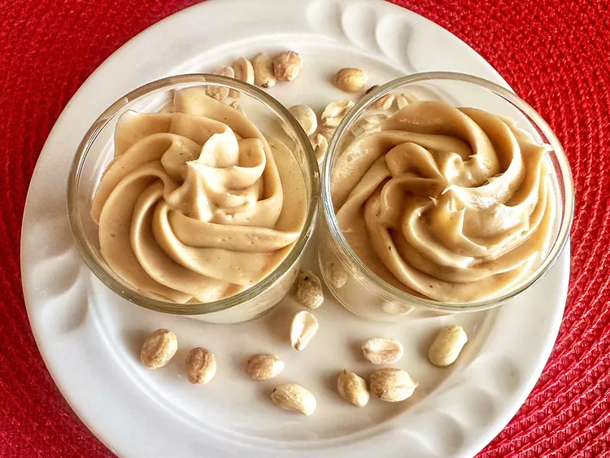

Peanut Butter Mousse

Description
Ingredients
- 2 ounces Neufchâtel cheese, softened
- 1/4 cup peanut butter
- 1/4 cup confectioners' sugar
- 1/2 cup heavy whipping cream
Steps
- Beat Neufchâtel cheese, confectioners' sugar, and peanut butter together in a bowl until smooth and well combined. Set aside.
- Place heavy whipping cream in another bowl and whip until medium peaks form. Add peanut butter mixture and whip just until combined.
- Divide evenly into 2 serving glasses. Serve at once, or cover and refrigerate.